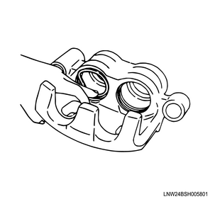
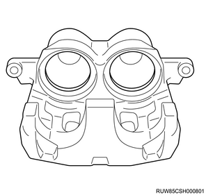
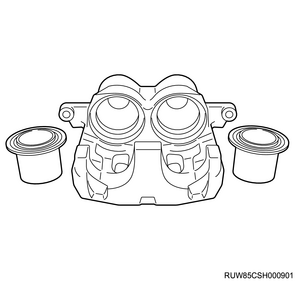
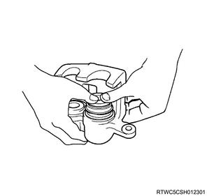
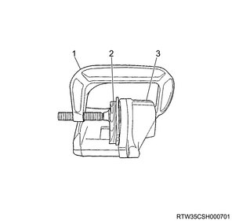
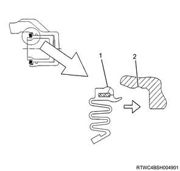
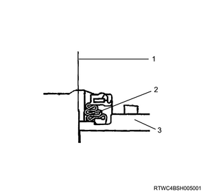
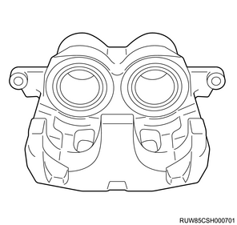
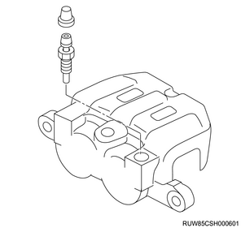

1. Install the ring seal to the cylinder body.
Note
- Apply AMMIX rubber grease or equivalent to the ring seal, and then install to the cylinder.
Caution
- Be careful the ring seal does not become twisted.


2. Install the dust boot to the piston.
Note
- Apply rubber grease NIGLUBE RX-2 or equivalent in a thin layer to the inner side and the outside lip of the dust boot.
Caution
- Do not mix up the upper and lower sides of the dust boot.

3. Install the piston to the brake caliper assembly.
Note
- Apply clean brake fluid to the piston, and install it to the caliper.
- When inserting the piston into the cylinder, use the finger pressure only.

Caution
- Do not use a tool such as a mallet or impact wrench because it may damage the cylinder wall or the ring seal.
Note
- Confirm that the piston moves smoothly in the cylinder.
- If the piston does not move or hardly moves, overhauling or replacement of the caliper is needed.
- If the piston cannot be pushed in with fingers, place a scrapped brake pad or a piece of wood on top of the piston and use 2 large-sized C clamps to insert the piston into the cylinder.

- Large-sized C clamp
- Brake pad or a piece of wood
- Caliper
Caution
- Insert it slowly and evenly.
- Do not hit the piston with a hammer, nor wrench the piston surface with pliers, etc.
Note
- After inserting the piston into the cylinder, push the dust boot peripheral toward the cylinder body side surface to assemble them.
- Carefully push the protruding portion of the dust boot into the cylinder body groove.

- Protruding portion of the dust boot
- Cylinder body groove
Note
- Confirm that the pleated portion of the dust boot does not protrude from the piston end.
- Pull out the piston slightly and confirm that the boot is firmly installed to the cylinder body groove.

- Piston end
- Dust boot pleated portion
- Piston

4. Install the bleeder screw to the brake caliper assembly.
Tightening torque： 9 to 13 N・m { 0.9 to 1.3 kgf・m / 80 to 115 lb・in }

5. Install the cap to the bleeder screw.